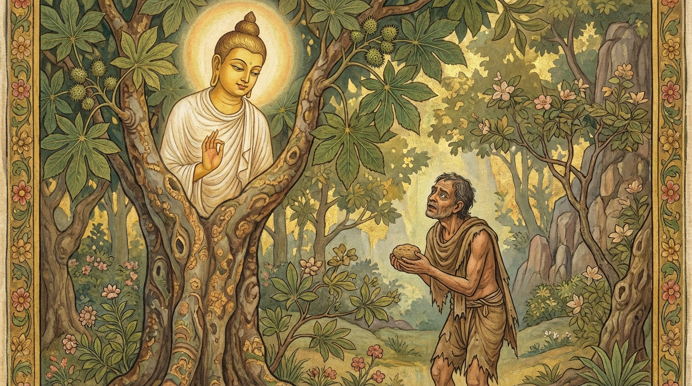

9. කුණ්ඩකපූව ජාතකය (109)
“යථන්නො පුරිසො හොති” යන මේ ජාතක දේශනාව ශාස්තෲන් වහන්සේ සැවැත් නුවර වැඩවසන සමයෙහි එක්තරා මහා දුගී පුරුෂයෙකු අරබයා දේශනා කළ සේක. සැවැත් නුවර ඇතැම් දිනවල බුදුපාමොක් මහසඟනට එක් කුලයක් පමණක් දන් දෙයි. ඇතැම් විට තුන් හතර දෙනෙකු එකතු වී ද, ඇතැම් විට සමූහ වශයෙන් ද, ඇතැම් විට වීථිවල වැසියන් එක්ව වීථි වශයෙන් ද, සමහර විට මුළු නගරයම එක්ව කැමැත්ත පරිදි ද දන් දෙති. එදින පැවතියේ ‘වීථි දානය’ නම් වූ වීථි වශයෙන් පිරිනැමෙන දානයකි. එහිදී මිනිස්සු බුදුන් ප්රමුඛ සංඝයාට කැඳ පිළිගන්වා, පසුව “කැවිලි ගෙන එන්න” යැයි කීහ.
එකල්හි එම වීථියෙහි වෙසෙන, අනුන්ට බැල මෙහෙවර කොට ජීවත් වන දුගී මිනිසෙක් මෙසේ සිතීය: “මට කැඳ දීමට වත්කමක් නැත. එහෙත් කැවිලි දෙන්නෙමි.” හෙතෙම ඉතා සිහින් සහල් කුඩු (කුණ්ඩක) ගෙන්වා, දියෙන් තෙමා, වරා කොළයක ඔතා, උණු අළුයෙහි පිස, “මෙය බුදුරජාණන් වහන්සේට පුදමි” යි සිතා එය රැගෙන බුදුරජුන් වෙත ගියේය. “කැවිලි ගෙන එන්න” යැයි කී මොහොතෙහිම, ඔහු සියල්ලන්ටම කලින් ඉදිරියට ගොස් ඒ කුඩු කැවුම බුදුරජුන්ගේ පාත්රයෙහි තැබුවේය. ශාස්තෲන් වහන්සේ අන් අය විසින් පිළිගන්වන ලද රසවත් කැවිලි නොපිළිගෙන, ඒ කුඩු කැවුම ම වැළඳූ සේක.
එකෙණෙහිම “සම්මා සම්බුදුරජාණන් වහන්සේ මහා දුගියාගේ කුඩු කැවුම පිළිකුල් නොකොට අමෘතයක් මෙන් වැළඳූ සේකැ” යි මුළු නගරය පුරා එකම කෝලාහලයක් ඇති විය. රජවරු, රාජ මහාමාත්යවරු ඇතුළු දොරටුපාලයන් දක්වා වූ සියල්ලෝම එහි රැස්ව, ශාස්තෲන් වහන්සේ වැඳ, මහා දුගියා වෙත එළඹ “පින්වත, කහවණු සියයක් ගෙන, දෙසියක් ගෙන, පන්සියයක් ගෙන අපට ඔය පින් කොටස දෙනු මැනවැ” යි කීවාහුය. හෙතෙම “ශාස්තෲන් වහන්සේගෙන් විමසා දැනගන්නෙමි” යි බුදුරජුන් වෙත ගොස් ඒ බව සැල කළේය. ශාස්තෲන් වහන්සේ “ධනය ගෙන හෝ නොගෙන සියලු සත්ත්වයන්ට පින් දෙන්නැ” යි වදාළ සේක.
ඔහු ධනය ගැනීමට පටන් ගත්තේය. මිනිස්සු දෙගුණ, සිව්ගුණ, අටගුණ ආදී වශයෙන් දුන් ධනය රන් කහවණු නව කෝටියක් විය. ඉක්බිති ශාස්තෲන් වහන්සේ අනුමෝදනා බණ දේශනා කොට විහාරයට වැඩමවා, භික්ෂූන් විසින් වත් දැක්වූ කල්හි බුද්ධාවවාදය දී ගන්ධ කුටියට පිවිසි සේක. රජතුමා සවස් කාලයෙහි මහා දුගියා කැඳවා සිටු තනතුර දී පිදීය.
භික්ෂූන් වහන්සේලා ධර්ම සභාවෙහි කථාවක් ඇති කළහ. “ඇවැත්නි, ශාස්තෲන් වහන්සේ මහා දුගියා දුන් කුඩු කැවුම පිළිකුල් නොකොට අමෘතයක් සේ වැළඳූ සේක. මහා දුගියා ද බොහෝ ධනයත් සිටු තනතුරත් ලබා මහත් සම්පතකට පැමිණියේය.” ශාස්තෲන් වහන්සේ එහි වැඩමවා “මහණෙනි, දැන් කිනම් කථාවකින් යුතුව හුන්නාහු ද?” යි විමසා, එම කථාව බව දැනගත් කල්හි, “මහණෙනි, මා විසින් මොහුගේ කුඩු කැවුම පිළිකුල් නොකොට වළඳන ලද්දේ දැන් පමණක් නොවේ. පෙර රුක් දෙවියකුව සිටියදී ද වළඳන ලද්දේය. එදා ද මොහු මා නිසා සිටු තනතුර ලැබුවේය” යි වදාරා අතීත කථාව ගෙනහැර දැක්වූ සේක.
අතීතයෙහි බරණැස් නුවර බ්රහ්මදත්ත රජු රාජ්යය කරන කල්හි බෝධිසත්ත්වයන් වහන්සේ එක්තරා තැනක එරඬු ගසක රුක් දෙවියෙක් වී උපන්හ. එකල ඒ ගමෙහි මිනිස්සු දේවතා මංගල්ය පවත්වන්නෝ වූහ. එක් උත්සව දිනක් පැමිණි කල්හි මිනිස්සු තම තමන්ගේ රුක් දෙවියන්ට බිලි පූජා කළහ. එකල්හි එක්තරා දුගී මිනිසෙක් අනෙක් මිනිසුන් රුක් දෙවියන්ට සත්කාර කරනු දැක, එක් එරඬු ගසකට සත්කාර කිරීමට සැරසුණේය.
මිනිස්සු තම තමන්ගේ දෙවියන් උදෙසා විවිධ මල්, සුවඳ විලවුන්, ආහාර පාන ගෙන ගියහ. නමුත් මෙම දුගී මිනිසා කුඩු කැවුමක් ද, භාජනයක දැමූ දිය ද ගෙන එරඬු ගස අසලට ගොස් මෙසේ සිතිය. “දෙවියන් වනාහි දිව්ය ආහාර අනුභව කරන්නෝය. මගේ දෙවියා මේ කුඩු කැවුම නොකනු ඇත. මෙය නිකරුණේ විනාශ කිරීමෙන් ඇති ඵලය කුමක්ද? මම ම මෙය අනුභව කරමි” යි සිතා ආපසු හැරුණේය.
එවිට බෝධිසත්ත්වයෝ රුක් දෙබලක සිට, “පින්වත් පුරුෂය, ඉදින් ඔබ පොහොසත් නම් මට මිහිරි කැවිලි දෙන්නෙහිය. නමුත් ඔබ දුගියෙකි. මම ඔබගේ කැවුම නොකා වෙන කිනම් දෙයක් කන්නද? මට වෙන් වූ කොටස නොනසන්න” යයි පවසා මේ ගාථාව වදාළහ:

“පුරුෂයා යම්බඳු ආහාරයක් ඇත්තේ වේ ද, ඔහුගේ දෙවියා ද එබඳු ආහාර ඇත්තකු වේ. එබැවින් මේ කුඩු කැවුම ගෙන එන්න. මගේ කොටස විනාශ නොකරන්න.”
එහි ‘යථන්නො’ යන්නෙන් අදහස් වන්නේ යම්බඳු භෝජනයක් ඇත්තේ වේ ද යන්නයි. ‘තථන්නා’ යනු ඒ පුරුෂයාගේ දෙවියා ද එබඳු භෝජන ඇත්තකු ම වන බවයි. ‘ආහරෙතං කුණ්ඩපූවං’ යනු සහල් කුඩුවලින් පිසූ ඒ කැවුම ගෙන එන්න, මගේ කොටස විනාශ නොකරන්න යන අර්ථයි.
එවිට ඒ දුගී මිනිසා ආපසු හැරී බෝධිසත්ත්වයන් දෙස බලා බලි පූජාව පැවැත්වීය. බෝධිසත්ත්වයෝ එහි ඕජාව වළඳා, “පින්වත් පුරුෂය, ඔබ කුමක් සඳහා මට උපහාර දක්වන්නෙහිද?” යි විමසූහ. “ස්වාමීනි, මම දුගියෙක් වෙමි. ඔබ වහන්සේ නිසා දුගී බවෙන් මිදීම සඳහා උපහාර දක්වමි” යි ඔහු කීය. එවිට බෝධිසත්ත්වයෝ, “පින්වත් පුරුෂය, නොසිතන්න (දුක් නොවන්න). ඔබ පූජා පැවැත්වූයේ කෙළෙහි ගුණ දන්නා දෙවියකුටය. මේ එරඬු ගස වටා මුවවිටින් මුවවිට ගැටෙන සේ (එකිනෙක ගැටී ඇති) නිදන් සැළි ඇත. ඔබ රජතුමාට දන්වා, කරත්තවලින් ධනය ගෙන්වාගෙන රජ මිදුලෙහි ගොඩගසන්න. රජතුමා ඔබට සතුටු වී සිටු තනතුර දෙනු ඇත” යැයි පවසා අතුරුදන් වූහ.
හෙතෙම එසේ කළේය. රජතුමා ද ඔහුට සිටු තනතුර දුන්නේය. මෙසේ ඔහු බෝධිසත්ත්වයන් නිසා මහත් සම්පතට පැමිණ, දිවි ඇති තෙක් සිට කම් වූ පරිදි මිය ගියේය.
ශාස්තෲන් වහන්සේ මේ ධර්ම දේශනාව ගෙනහැර දක්වා ජාතකය පූර්වාපර සන්ධි ගළපා නිම කළ සේක. “එකල දුගී පුරුෂයා නම් දැන් මේ දුගී පුරුෂයාමය. එරඬු රුක් දෙවියා නම් මම ම වීමි.”
කුණ්ඩකපූව ජාතක වර්ණනාව යි.